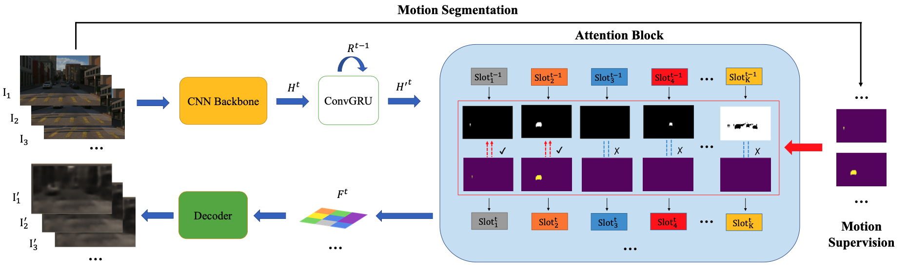
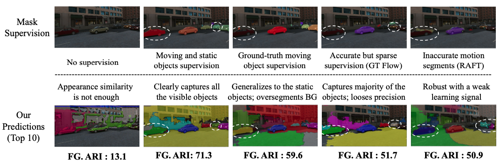

Abstract
This paper studies the problem of object discovery -- separating objects from the background without manual labels. Existing approaches rely on appearance cues, such as color, texture and location, to group pixels into object-like regions. However, by relying on appearance alone, these methods fail to reliably separate objects from the background in cluttered scenes. This is a fundamental limitation, since the definition of an object is inherently ambiguous and context-dependent. To resolve this ambiguity, in this work we choose to focus on dynamic objects -- entities that are capable of moving independently in the world. We then scale the recent auto-encoder based frameworks for unsupervised object discovery from toy, synthetic images to complex, real world scenes by simplifying their architecture, and augmenting the resulting model with a weak learning signal from a motion segmentation algorithm. We demonstrate that, despite only capturing a small subset of the objects, this signal is enough to bias the model, which then learns to segment both moving and static instances of dynamic objects. We show that this model scales to our newly collected, photo-realistic synthetic dataset with street driving scenarios. Additionally, we leverage ground truth segmentation and flow annotations in this dataset for thorough ablation and evaluation. Finally, our experiments on the real-world KITTI dataset demonstrate that the proposed approach outperforms both heuristic- and learning-based methods by capitalizing on motion cues.Visualizations


Ablation studies with different levels of supervisions

Dataset


TRI-PD dataset is generated by the Parallel Domain platform. It contains RGB, bounding box, instance segmentation, optical flow, depth, camera calibrations, semantic segmentations, etc. Besides these annottaions, we have also rendered the moving objects and dynamic objects ground-truth for this dataset.
Download link: Simplified Dataset. See our Repo for details.